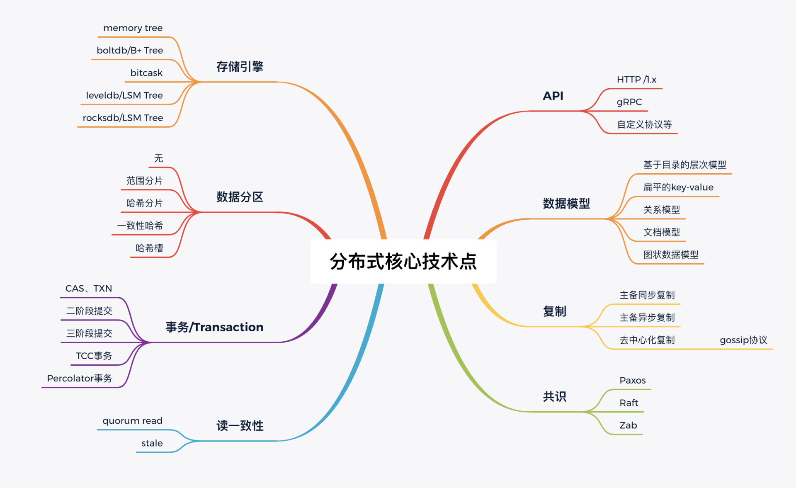

- 00 开篇词 为什么你要学习etcd_.md.html
- 01 etcd的前世今生：为什么Kubernetes使用etcd？.md.html
- 02 基础架构：etcd一个读请求是如何执行的？.md.html
- 03 基础架构：etcd一个写请求是如何执行的？.md.html
- 04 Raft协议：etcd如何实现高可用、数据强一致的？.md.html
- 05 鉴权：如何保护你的数据安全？.md.html
- 06 租约：如何检测你的客户端存活？.md.html
- 07 MVCC：如何实现多版本并发控制？.md.html
- 08 Watch：如何高效获取数据变化通知？.md.html
- 09 事务：如何安全地实现多key操作？.md.html
- 10 boltdb：如何持久化存储你的key-value数据？.md.html
- 11 压缩：如何回收旧版本数据？.md.html
- 12 一致性：为什么基于Raft实现的etcd还会出现数据不一致？.md.html
- 13 db大小：为什么etcd社区建议db大小不超过8G？.md.html
- 14 延时：为什么你的etcd请求会出现超时？.md.html
- 15 内存：为什么你的etcd内存占用那么高？.md.html
- 16 性能及稳定性（上）：如何优化及扩展etcd性能？.md.html
- 17 性能及稳定性（下）：如何优化及扩展etcd性能_.md.html
- 18 实战：如何基于Raft从0到1构建一个支持多存储引擎分布式KV服务？.md.html
- 19 Kubernetes基础应用：创建一个Pod背后etcd发生了什么？.md.html
- 20 Kubernetes高级应用：如何优化业务场景使etcd能支撑上万节点集群？.md.html
- 21 分布式锁：为什么基于etcd实现分布式锁比Redis锁更安全？.md.html
- 22 配置及服务发现：解析etcd在API Gateway开源项目中应用.md.html
- 23 选型：etcd_ZooKeeper_Consul等我们该如何选择？.md.html
- 24 运维：如何构建高可靠的etcd集群运维体系？.md.html
- 特别放送 成员变更：为什么集群看起来正常，移除节点却会失败呢？.md.html
- 结束语 搞懂etcd，掌握通往分布式存储系统之门的钥匙.md.html
- 捐赠
结束语 搞懂etcd，掌握通往分布式存储系统之门的钥匙
你好，我是唐聪。
时间过得真快，这就到了我们的定期更新的最后一节课了。从筹备、上线到今天专栏完结，过去了将近7个多月的时间。
说句实在话，刚开始筹备专栏的时候，我没想过战线会拉得如此之长。当时就是简单地觉得，我的经验也比较丰富了，输出应该很简单。但是其实做专栏耗费的心力远超我的预期：每一节课的构思写作都会花费我大量的时间，而且写完后还得考虑文章逻辑是否有优化的空间，怎样加配图、加一个什么样的配图可以更加形象，甚至部分文章写完自己不满意我还会重写一遍。
细心的你应该能发现，其实这个专栏每一节课的内容都是比较多的。一开始的筹划是每篇文章3500字左右，但最后为了讲清楚、讲明白，每一节课大部分都是到了6000字到7000字的内容（有的文章字数是破万了）。在此特别感谢我的“好基友”王超凡非常用心地和我一块深度review每一篇文章，因为平时工作也很忙，还经常得封闭式开发，所以录音只能放在凌晨。
在这里和你分享一件有意思的小事，专栏上线的前一天凌晨，我们和编辑正霖都激动得睡不着，在群里预览文章，聊上线后会是怎么样的一番景象。我们甚至想，会不会上线后被各位疯狂吐槽，以至于不得不录一个“负荆请罪”视频。
现在回想起来，真的是做好了被大家吐槽的准备。但你们给我的是超出预期的热情。不少同学从上线到结束，都在时刻关注、学习每一节课，并留下优质的提问以及鼓励、认可。
- 有的同学是比较资深的etcd使用者，会独立分析源码，撰写高质量的技术博客，并给出精彩的回答；
- 有的同学是刨根问底的etcd兴趣用户，会细致思考每一个异常场景，给出精彩的提问；
- 有的同学刚刚入门etcd用户，正因为你们的提问，让我意识到需要在基础篇中多去增加一些特性初体验的案例；
- 还有的同学着急说面试要用，所以春节期间我们没有筹划春节特别活动，而是正常更新课程正文；
- ……
当然在这过程中，我也收获满满。为了解答你们的疑问，我必须得更加深入地阅读etcd源码，也是倒逼着我去进一步成长。
编辑正霖半开玩笑地和我说，我们是以百米冲刺的速度去跑马拉松。这段经历真的很难忘，你们的评论和收藏证明了我们的付出是值得的。
在这最后一节课里，我想最后和你再分享下我个人的etcd学习经验，以及这整个专栏设计和写作思路。
如果要用一个核心词来总结这个专栏，那我希望是问题及任务式驱动。
从我的个人经验上来看，我每次进一步学习etcd的动力，其实都是源于某个棘手的问题。数据不一致、死锁等一系列棘手问题，它们会倒逼我走出舒适区，实现更进一步成长。
从专栏目录中你也可以看到，每讲都是围绕着一个问题深入展开。在具体写作思路上，我会先从整体上给你介绍整体架构、解决方案，让你有个全局的认识。随后围绕每个点，按照由浅入深的思路给你分析各种解决方案。
另外，任务式驱动也是激励你不断学习的一个非常好的手段，通过任务实践你可以获得满满的成就感，建立正向反馈。你在学习etcd专栏的过程中，可结合自己的实际情况，为自己设立几个进阶任务，下面我给你列举了部分：
- 从0到1搭建一个etcd集群（可以先从单节点再到多节点，并进行节点的增删操作）；
- 业务应用中使用etcd的核心API；
- 自己动手实现一个分布式锁的包；
- 阅读etcd的源码，写篇源码分析博客 （可从早期的etcd v2开始）；
- 基于raftexample实现一个支持多存储引擎的KV服务；
- 基于Kubernetes的Operator机制，实现一个etcd operator，创建一个CRD资源就可新建一个集群；
- ……
我希望带给你的不仅仅是etcd原理与实践案例，更希望你收获的是一系列分布式核心问题解决方案，它们不仅能帮助你搞懂etcd背后的设计思想与实现，更像是一把通往分布式存储系统之门的钥匙，让你更轻松地学习、理解其他存储系统。
那你可能会问了，为什么搞懂etcd就能更深入理解分布式存储系统呢？
因为etcd相比其他分布式系统如HBase等，它足够简洁、轻量级，又涵盖了分布式系统常见的问题和核心概念，如API、数据模型、共识算法、存储引擎、事务、快照、WAL等，非常适合新人去学习。

上图我为你总结了etcd以及其他分布式系统的核心技术点，下面我再和你简要分析一下几个分布式核心问题及解决方案，并以Redis Cluster集群模式作为对比案例，希望能够帮助你触类旁通。
首先是服务可用性问题。分布式存储系统的解决方案是共识算法、复制模型。etcd使用的是Raft共识算法，一个写请求至少要一半以上节点确认才能成功，可容忍少数节点故障，具备高可用、强一致的目标。Redis Cluster则使用的是主备异步复制和Gossip协议，基于主备异步复制协议，可将数据同步到多个节点，实现高可用。同时，通过Gossip协议发现集群中的其他节点、传递集群分片等元数据信息等操作，不依赖于元数据存储组件，实现了去中心化，降低了集群运维的复杂度。
然后是数据如何存取的问题。分布式存储系统的解决方案是存储引擎。除了etcd使用的boltdb，常见的存储引擎还有我们实践篇18中所介绍bitcask、leveldb、rocksdb（leveldb优化版）等。不同的分布式存储系统在面对不同业务痛点时（读写频率、是否支持事务等），所选择的解决方案不一样。etcd v2使用的是内存tree，etcd v3则使用的是boltdb，而Redis Cluster则使用的是基于内存实现的各类数据结构。
最后是如何存储大量数据的问题。分布式存储系统的解决方案是一系列的分片算法。etcd定位是个小型的分布式协调服务、元数据存储服务，因此etcd v2和etcd v3都不支持分片，每个节点含有全量的key-value数据。而Redis Cluster定位是个分布式、大容量的分布式缓存解决方案，因此它必须要使用分片机制，将数据打散在各个节点上。目前Redis Cluster使用的分片算法是哈希槽，它根据你请求的key，基于crc16哈希算法计算slot值，每个slot分配给对应的node节点处理。
HASH_SLOT = CRC16(key) mod 16384
etcd 作为最热门的云原生存储之一，在腾讯、阿里、Google、AWS、美团、字节跳动、拼多多、Shopee、明源云等公司都有大量的应用，覆盖的业务不仅仅是 Kubernetes 相关的各类容器产品，更有视频、推荐、安全、游戏、存储、集群调度等核心业务。
更快、更稳是etcd未来继续追求的方向，etcd社区将紧密围绕Kubernetes社区做一系列的优化工作，提供集群降级、自动将Non-Voting的Learner节点提升为Voting Member等特性，彻底解决饱受开发者诟病的版本管理等问题。
希望这个专栏一方面能帮助你遵循最佳实践，高效解决核心业务中各类痛点问题，另一方面能轻松帮你搞定面试过程中常见etcd问题，拿到满意的offer。
当然，我发现很多同学只是默默地收藏，一直在“潜水”。我希望在这最后一课里，大家一块来“灌灌水”，分享一下你自己的etcd学习方法以及你对这门课的感受。我为你准备了一份问卷，希望你花两分钟填一下，说不定你就是我们这门课的“小锦鲤”~
最后，再次感谢，我们留言区和加餐见！
© 2019 - 2023 Liangliang Lee. Powered by gin and hexo-theme-book.